⚠ Thresholds BLIND — never revealed to customer. Once earned, permanently lit. Unearned = fully grayed. Front: coin art + railroad name + badge name. Flip: greeting + locomotive + social class history. Threshold shown at bottom of reverse for command center only — never in Badge Depot. Click/tap any token to flip.
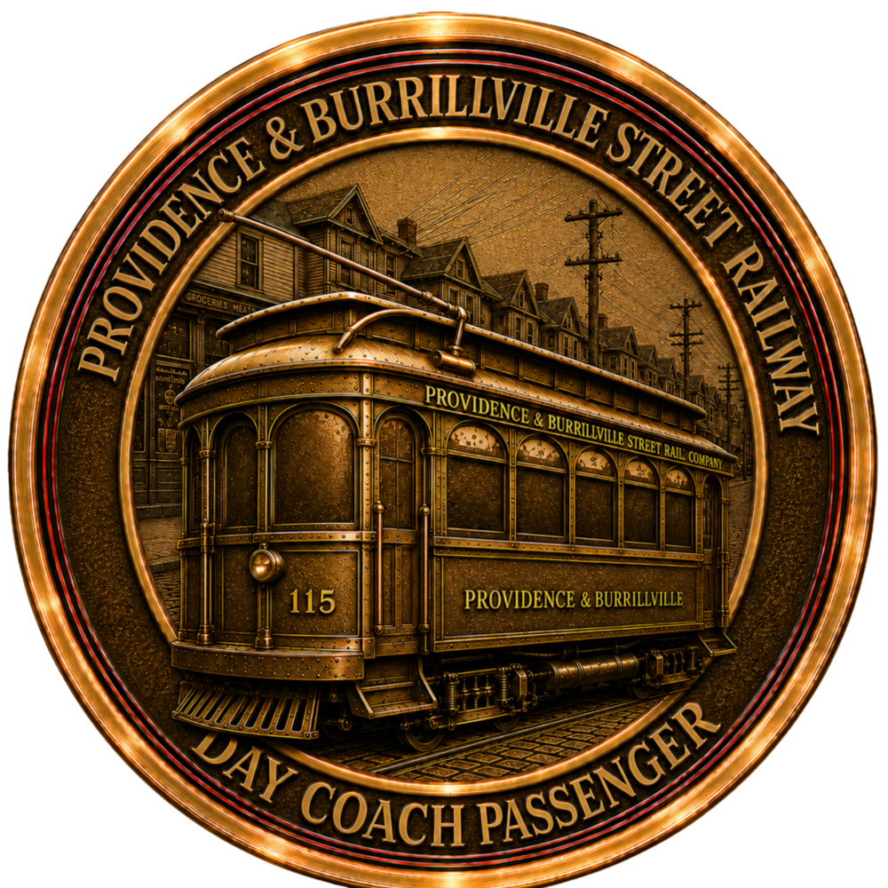
Providence & Burrillville Street Railway
New
Day Coach Passenger
Tap to flip
"You've earned a ticket to ride at Pepper Junction!"
Locomotive
Electric trolley car, Providence & Burrillville Street Railway. Part of the Rhode Island Company network under New Haven control. These cars ran the mill town corridors of northern Rhode Island in the early 1900s — open platforms, wooden benches, the smell of coal and rain. Short runs, working people, everyday life on rails.
Historical Fact
In 1930, nearly half of American families earned less than $500 a year. A trolley fare was how you got to work. Not a luxury — a lifeline.
⚠ CMD CTR ONLY · $100 lifetime spend · Working Poor
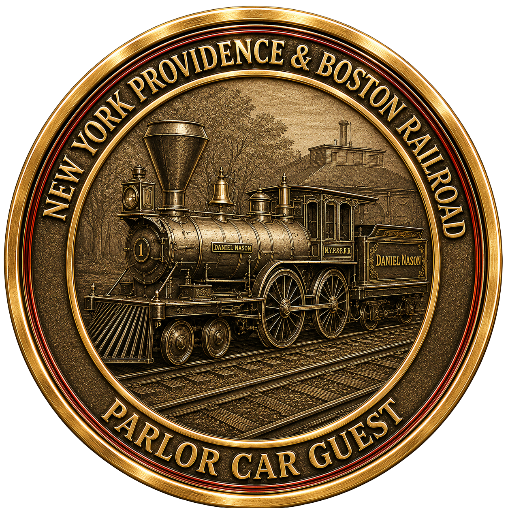
New York Providence & Boston Railroad
Parlor Car Guest
Tap to flip
"The conductor knows your name now."
Locomotive
The Daniel Nason — a 4-4-0 American Standard, NYP&B Railroad. This line opened the Shore Line in 1837, one of the earliest rail corridors in New England. The 4-4-0 was the workhorse of 19th century American railroading — elegant, reliable, and built for distance.
Historical Fact
Working Class families in 1930 earned between $500 and $1,000 annually. A parlor car ticket was an occasional indulgence — a Sunday ride, a special occasion. Something to talk about at the table.
⚠ CMD CTR ONLY · $500 lifetime spend · Working Class
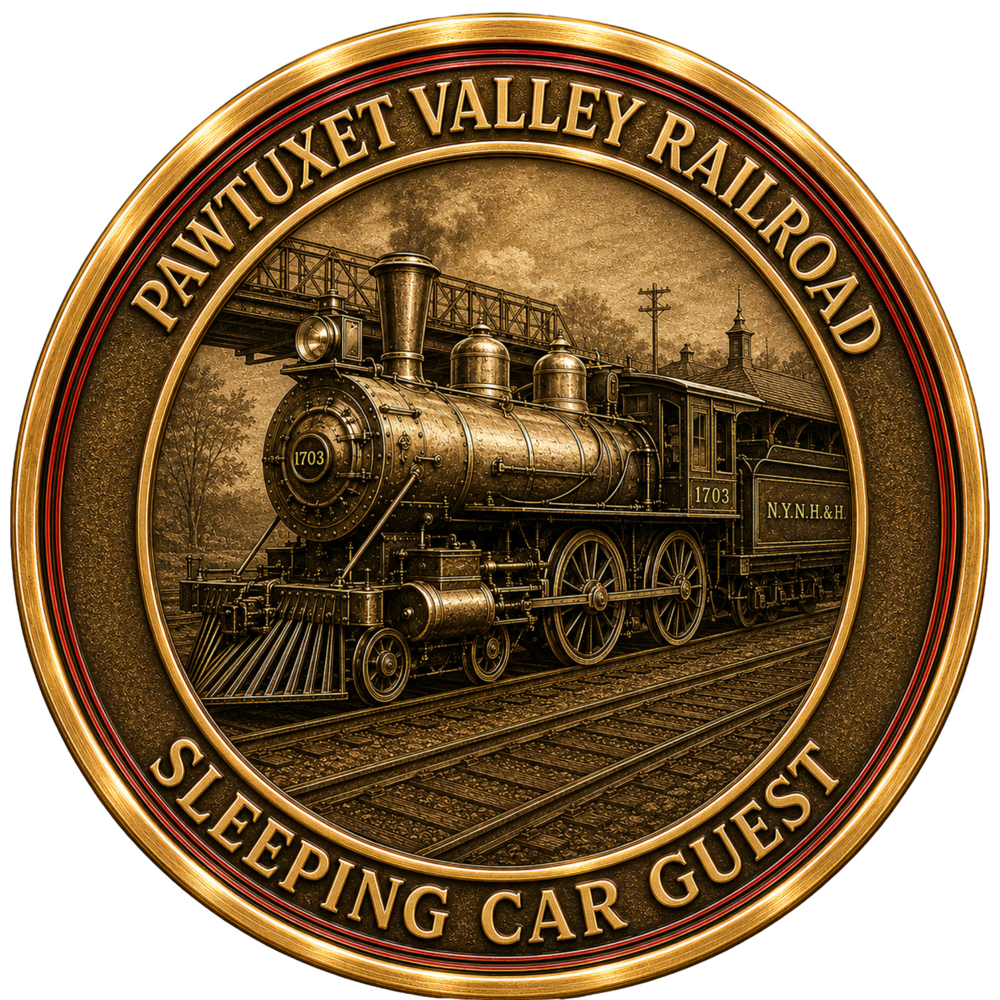
Pawtuxet Valley Railroad
Sleeping Car Guest
Tap to flip
"You're not just passing through anymore."
Locomotive
NYNH&H C-2 Class 4-4-0 No. 1703 — built by the Rhode Island Locomotive Works in 1883. Rhode Island built, Rhode Island operated. Photographed arriving at Sockanosett around 1905. A local machine on a local line, connecting the Pawtuxet Valley to the broader New Haven network.
Historical Fact
Middle Class households in 1930 earned between $1,000 and $2,500 a year. A sleeping car berth meant overnight travel in relative comfort — arriving rested, presentable, and ready. A small but meaningful distinction.
⚠ CMD CTR ONLY · $1,000 lifetime spend · Middle Class
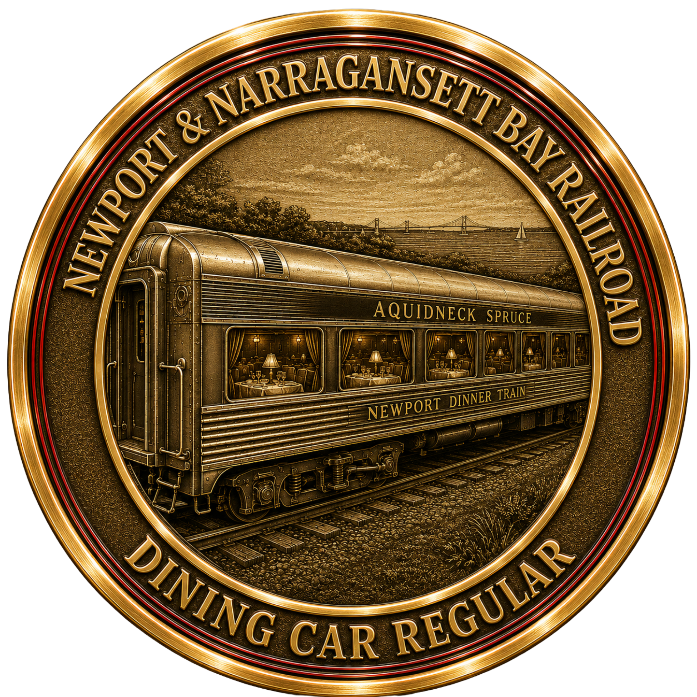
Newport & Narragansett Bay Railroad
Dining Car Regular
Tap to flip
"Your usual table is ready."
Locomotive
The Aquidneck Spruce — originally built as a 54-seat coach for the Pennsylvania Railroad in 1946. Now operating as the Newport Dinner Train along the Narragansett Bay coastline. White tablecloths, soft lighting, the bay outside the window. Some railroad cars were built to move people. This one was built to slow them down.
Historical Fact
Upper Middle Class families in 1930 earned between $2,500 and $5,000 annually. Dining car service was expected at this level — not a treat, a standard. The table was set before they boarded.
⚠ CMD CTR ONLY · $2,500 lifetime spend · Upper Middle Class
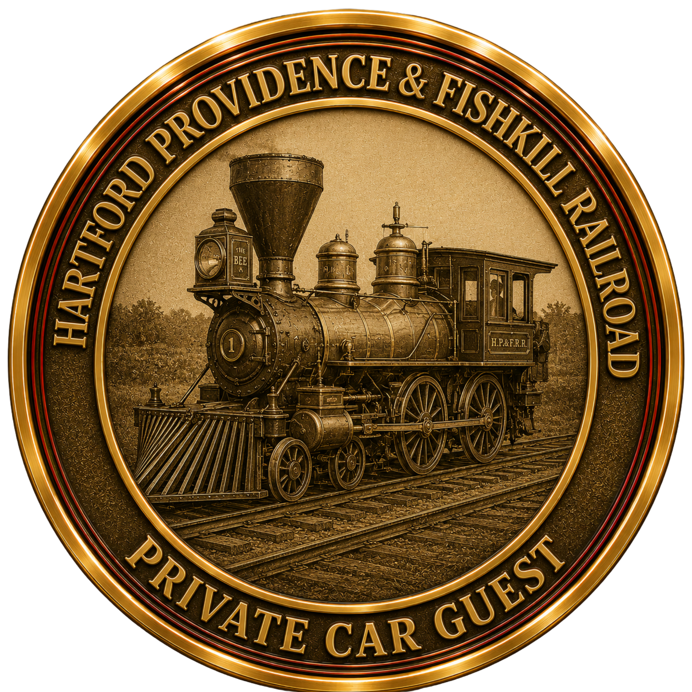
Hartford Providence & Fishkill Railroad
Private Car Guest
Tap to flip
"The car is yours. We'll handle the rest."
Locomotive
HP&F engine "The Bee" — a named, documented locomotive photographed on the Hartford Providence & Fishkill line in the 19th century. Inbound from the Connecticut state line, The Bee worked every stop on the Rhode Island corridor: Greene → Washington → Summit → Anthony → Quidnick → Arctic → River Point → Olneyville → Dike Street → Providence Union Station. Mill towns, factory villages, working Rhode Island from end to end. The western section of this line — abandoned in 1968 — is now known locally as the Trestle Trail, a hiking and biking path through the Coventry and Greene corridor where the tracks once ran. The rails are gone. The geography remembers.
Historical Fact
Wealthy households in 1930 earned between $5,000 and $20,000 a year. A private car arrangement meant the railroad came to you — your schedule, your guests, your menu. The timetable was a suggestion.
⚠ CMD CTR ONLY · $5,000 lifetime spend · Wealthy
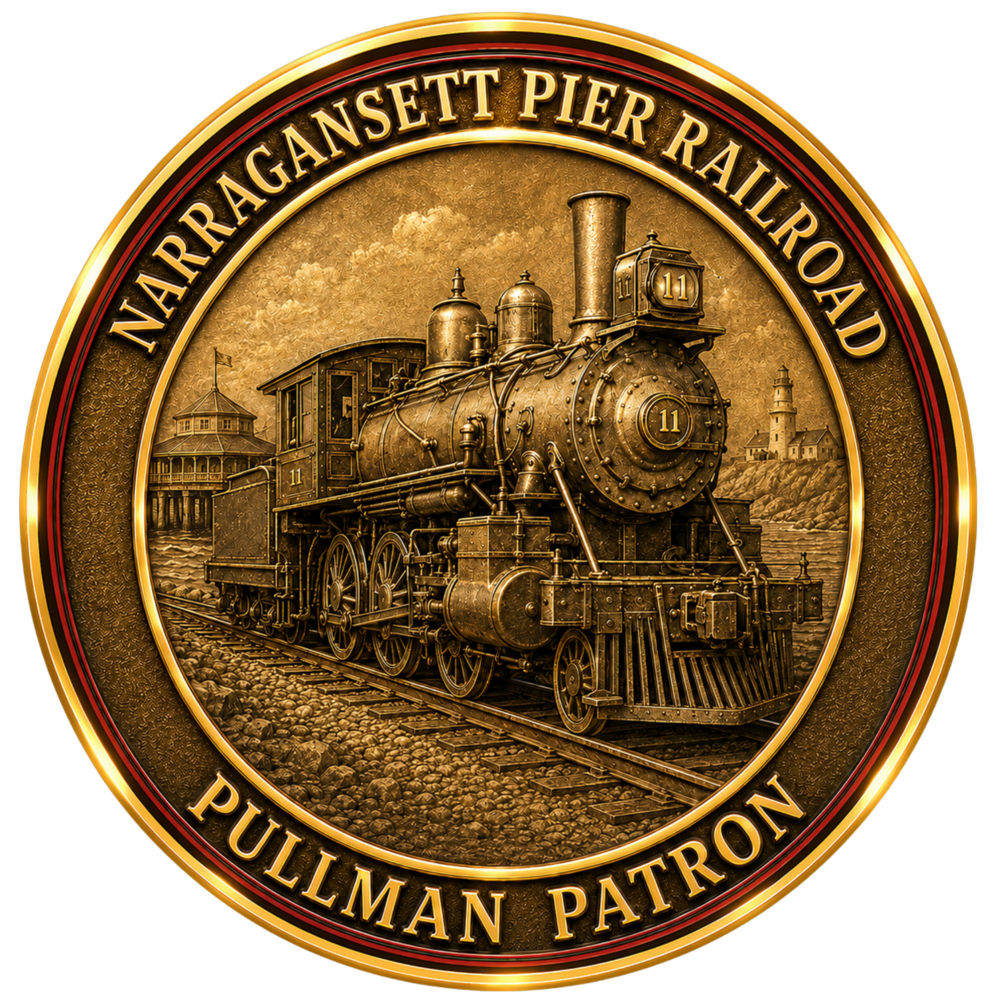
Narragansett Pier Railroad
Pullman Patron
Tap to flip
"They don't print your name on just anyone's car."
Locomotive
ALCO 2-6-0 Mogul No. 11 — ordered 1922, arrived 1923. The Narragansett Pier Railroad's primary steam locomotive in its final passenger era. A compact Mogul working an 8.5 mile run: West Kingston → Peace Dale → Wakefield → Narragansett Pier. Summer crowds, coastal air, the kind of ride people planned their seasons around. The tracks are gone now — the right of way lives on as the William C. O'Neill Bike Path, tracing the same route to the sea.
Historical Fact
Very Wealthy households in 1930 earned between $20,000 and $50,000 annually. Pullman service meant a porter who remembered your preferences, a berth made up before you asked, and a car that felt more like a private club than a train.
⚠ CMD CTR ONLY · $10,000 lifetime spend · Very Wealthy
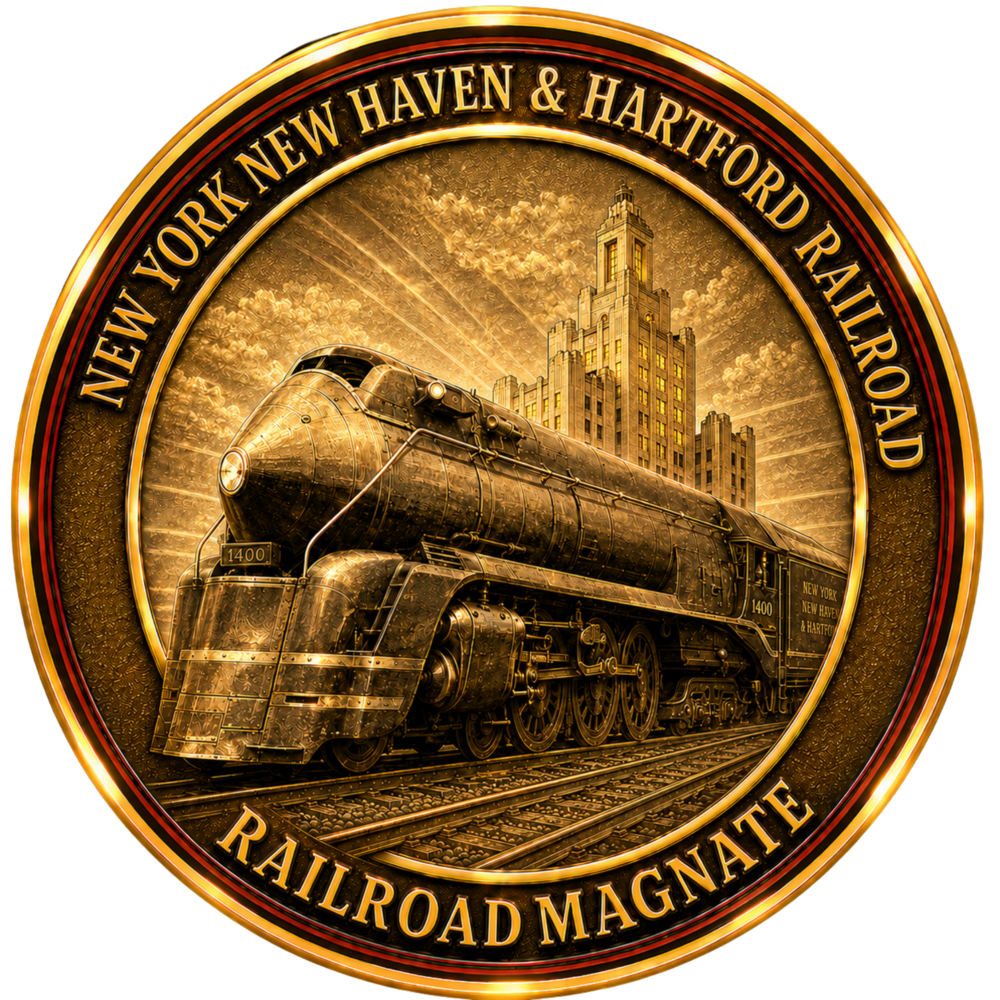
New York New Haven & Hartford Railroad
Railroad Magnate
Tap to flip
"You don't ride the train. You own the tracks."
Locomotive
Class I-5 4-6-4 Hudson No. 1400 — semi-streamlined, Art Deco, late 1930s. The locomotive that hauled the Merchants Limited along the Shore Line. Built for speed and presence, the I-5 was the crown of the New Haven's passenger fleet. Behind it, the Industrial Trust Building rose over Providence — two minutes from Union Station, the tallest structure in Rhode Island, a monument to the same era. Both built at the peak. Both now waiting for their next chapter.
Historical Fact
Railroad Magnates in the 1930s didn't have salaries — they had empires. Stockholders, board members, the names on the stations. Their income was measured not in wages but in ownership. In the 1930s that meant controlling the movement of an entire region.
⚠ CMD CTR ONLY · $20,000 lifetime spend · Magnate Class · "If someone spends $20K they might as well be a stockholder."
Level 1 — Heat Identity
Keep the Milk for Cookies
Mild · Level 1
Tap to flip
Mild · L1
You're here for flavor, not fire. Mild heat lets the food speak and the sauce support it. There's nothing wrong with knowing what you like.
Earn with 5 Mild heat purchases. Level Up Rule applies.
Farmer's Market Heat
Medium · Level 1
Tap to flip
Medium · L1
You know what heat is and you're not afraid of it. Medium is the most honest heat level — enough to notice, not enough to regret. The sweet spot of the sauce world.
Earn with 5 Medium heat purchases. Level Up Rule applies.
Sauce Boss
Hot · Level 1
Tap to flip
Hot · L1
Your face says everything. Hot heat means you've moved past curiosity into commitment. You're not just tolerating it — you're chasing it. That's the difference.
Earn with 5 Hot heat purchases. Level Up Rule applies.
Pucker Up, Pepper Head
Very Hot · Level 1
Tap to flip
Very Hot · L1
You're running the kitchen now. Very Hot is where casual heat ends and serious heat begins. The Sauce Boss doesn't ask for mild. The Sauce Boss doesn't apologize.
Earn with 5 Very Hot heat purchases. Level Up Rule applies.
Have Anything Hotter?
Super Hot · Level 1
Tap to flip
Super Hot · L1
You finished the Super Hot and looked up. That question is its own answer. The people who ask if there's anything hotter are the people who need to find out.
Earn with 5 Super Hot heat purchases. Level Up Rule applies.
Pass the $%&@#! Carton!
Extreme · Level 1
Tap to flip
Extreme · L1
When the table starts asking for milk you're doing something right. Extreme heat is not a category — it's a reputation. You've earned yours.
Earn with 5 Extreme heat purchases. Level Up Rule applies.
Incinerator
Inferno · Level 1
Tap to flip
Inferno · L1
There is no higher tier. This is the end of the heat scale and you live here. The Incinerator badge doesn't need an explanation. Everyone else at the table already knows.
Earn with 5 Inferno heat purchases. Level Up Rule applies.
Fever
Mild · Level 2
Tap to flip
Trivia
Peggy Lee rewrote the original lyrics — adding verses about Romeo & Juliet and Captain Smith & Pocahontas — and recorded it with no guitar whatsoever. Just bass, drums, and finger snaps. She added some of the snaps herself. What year did she record it?
Answer: 1958 · Earn with 10 Mild heat purchases.
Cruel Summer
Medium · Level 2
Tap to flip
Trivia
Bananarama refused to allow this song on the official soundtrack album — but it still became their first US top-10 hit after appearing in a 1984 film. The band didn't profit from the placement. The song did anyway. Which film put Cruel Summer on the map?
Answer: The Karate Kid · Earn with 10 Medium heat purchases.
I Like it Hot, Hot, Hot
Hot · Level 2
Tap to flip
Trivia
The Buster Poindexter music video for this song featured a surprise cameo from a famous comedic actor — who later starred alongside Poindexter in a 1988 Christmas film. Name the actor and the film.
Answer: Bill Murray / Scrooged · Earn with 10 Hot heat purchases.
Hot Blooded
Very Hot · Level 2
Tap to flip
Trivia
Hot Blooded powered a pivotal training montage in a 1985 coming-of-age wrestling film set in Spokane, Washington — starring a young Matthew Modine and featuring an early Madonna performance. Name the film.
Answer: Vision Quest · Earn with 10 Very Hot heat purchases.
Highway to the Danger Zone
Super Hot · Level 2
Tap to flip
Trivia
Kenny Loggins recorded this song specifically for a 1986 film. It became so inseparable from that film that you cannot hear one without seeing the other. Aviator sunglasses. Fighter jets. Volleyball. Name the film.
Answer: Top Gun · Earn with 10 Super Hot heat purchases.
Burning Down the House
Extreme · Level 2
Tap to flip
Trivia
Burning Down the House plays during an actual house fire early in a 1984 college comedy that put nerds on the map. The placement was so literal it became legendary. Name the film.
Answer: Revenge of the Nerds · Earn with 10 Extreme heat purchases.
Ring of Fire
Inferno · Level 2
Tap to flip
Trivia
Ring of Fire anchors the biographical film that introduced Johnny Cash to a generation that never saw him perform live. Name the film and the actor who played Cash.
Answer: Walk the Line / Joaquin Phoenix · Earn with 10 Inferno heat purchases.
Ferris Wheel
Mild · Level 3
Tap to flip
Rocky Point · Ferris Wheel
One of the oldest attractions at Rocky Point. The Spanish Fandango — a rotating wheel ride and forerunner to the modern Ferris wheel — was installed on the grounds as early as 1858. The Ferris wheel itself was built by Charles Looff, the same craftsman responsible for the legendary Crescent Park carousel just down the bay.
Earn with 15 Mild heat purchases. Level Up Rule applies.
The Sky Line
Medium · Level 3
Tap to flip
Rocky Point · The Sky Line
Ski-lift style chairs gliding over the entire park. Installed in 1966, the Sky Line offered a scenic — if slightly terrifying — aerial view of the rides and Narragansett Bay below. Its towers still stand at Rocky Point State Park today. Everything else is gone. The towers remain.
Earn with 15 Medium heat purchases. Level Up Rule applies.
The Flume
Hot · Level 3
Tap to flip
Rocky Point · The Flume
Sixty-foot drop. Constant long lines. One of the park's most beloved rides for decades. After Rocky Point closed the Flume was purchased by Enchanted Kingdom in the Philippines, where it still operates today as the Jungle Log Jam. The ride outlived the park.
Earn with 15 Hot heat purchases. Level Up Rule applies.
Tilt-A-Whirl
Very Hot · Level 3
Tap to flip
Rocky Point · Tilt-A-Whirl
A Rocky Point staple for decades. Regulars knew the secret — watch the cars before you board and find the one that spins the most, then grab it. It wasn't luck. It was strategy. The Tilt-A-Whirl rewarded the people who paid attention.
Earn with 15 Very Hot heat purchases. Level Up Rule applies.
The Yo Yo
Super Hot · Level 3
Tap to flip
Rocky Point · The Yo Yo
Officially listed as Ride #23 on Rocky Point's brochure map. A Chance Rides swing attraction — elevated circular motion, outward-swinging chairs, the midway and the bay in every direction. A fixture of the park from the 1970s through the 1990s. Families, teenagers, and everyone in between lined up for it every summer.
Earn with 15 Super Hot heat purchases. Level Up Rule applies.
Free Fall
Extreme · Level 3
Tap to flip
Rocky Point · Free Fall
13 stories. 55 mph. There is not much else to say about the Free Fall except that people rode it willingly, repeatedly, and then got back in line.
Earn with 15 Extreme heat purchases. Level Up Rule applies.
The Corkscrew
Inferno · Level 3
Tap to flip
Rocky Point · The Corkscrew
First-of-its-kind in New England when it opened in 1984. One 360-degree loop. Two full twists. First riders described it as "getting tossed around in a clothes dryer" and "strapped on a giant runaway roller skate." After Rocky Point closed the Corkscrew sold for $805,000 and now operates at Wild Waves Theme Park in Federal Way, Washington as the Wild Thing. Rhode Island's most notorious ride is still running — just not here.
Earn with 15 Inferno heat purchases. Level Up Rule applies.
Current month: July 2026 (Cancer). Jan–June = RETIRED. July = current/earnable. Aug–Dec = future/gray. Secret badge "Year of the Horse" awarded for completing all 12 — filed under Secret Badges, never shown before earned. Click/tap any badge to flip.
Capricorn
January · 2026
Tap to flip
"Saturn returns. Loyalty rewards. Capricorn understands both."
Visit next time for the Celestial Badge.
Aquarius
February · 2026
Tap to flip
"Hot sauce before it was cool. You were always ahead of the curve."
Visit next time for the Celestial Badge.
Pisces
March · 2026
Tap to flip
"No retrograde required. Your instincts brought you here."
Visit next time for the Celestial Badge.
Aries
April · 2026
Tap to flip
"The stars say Aries never hesitates. Neither did you. Welcome to the club."
Visit next time for the Celestial Badge.
Taurus
May · 2026
Tap to flip
"Mercury may be retrograde but your taste? That's written in the stars."
Visit next time for the Celestial Badge.
Gemini
June · 2026
Tap to flip
"Can't decide between hot or hotter? Classic Gemini. We stocked both."
Visit next time for the Celestial Badge.
Cancer
July · 2026 · Now
Tap to flip
"Cancers cook for everyone. We just make sure it's worth eating."
Visit next time for the Celestial Badge.
Leo
August · 2026
Tap to flip
"The universe didn't need to align for this. Leo energy handled it."
Visit next time for the Celestial Badge.
Virgo
September · 2026
Tap to flip
"You read every label. We respect that. You're exactly our kind of customer."
Visit next time for the Celestial Badge.
Libra
October · 2026
Tap to flip
"I don't know if the planets are aligned but you definitely align with Pepper Junction."
Visit next time for the Celestial Badge.
Scorpio
November · 2026
Tap to flip
"Scorpios don't do mild. Neither do we."
Visit next time for the Celestial Badge.
Sagittarius
December · 2026
Tap to flip
"The stars said go west. You ended up at Pepper Junction. Close enough."
Visit next time for the Celestial Badge.
Trigger: 5 qualifying purchases in that food category = badge earned at Lvl 1. Every additional 5 purchases in that category = Level Up, no cap. Independent per category — a single purchase can progress multiple food badges simultaneously if the product matches multiple categories. Mediterranean is a narrative-series entry (Olive Oil & Vin) rather than a standard bartender catchphrase. Single-face card — no flip behavior. Hover enlarges image; click toggles enlarged card view; click again returns to original size.
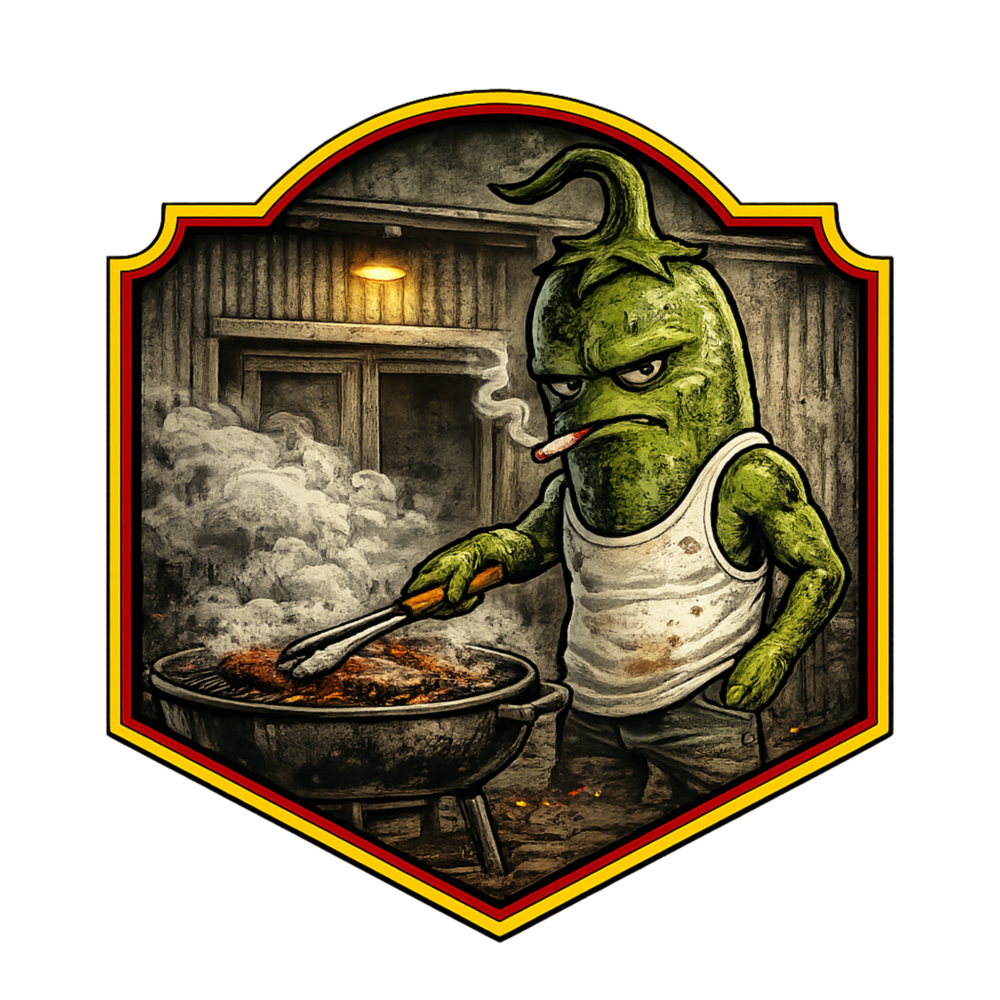
Smoking Section
"Five more trips through the smoke. At this point, your table's permanently reserved in the Smoking Section."
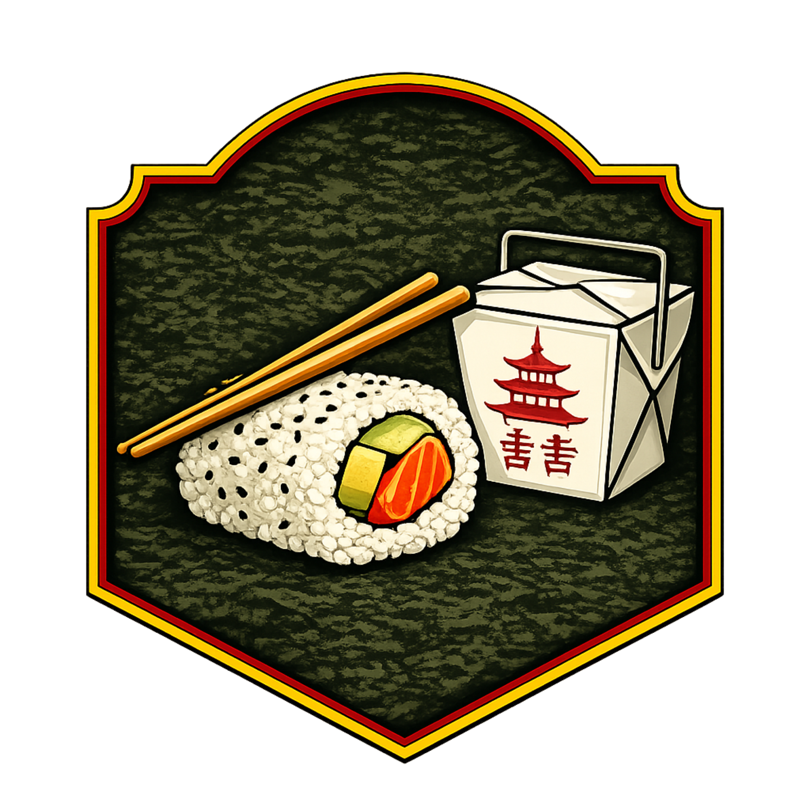
Wok Star
"Five more Asian flavors served up. You're not just working the wok—you're headlining it."
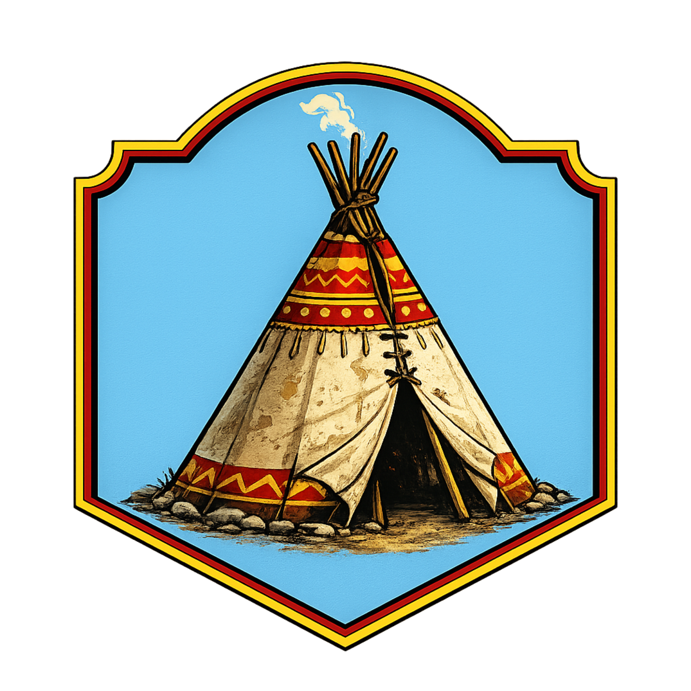
Curry On
"Five more passes through the spice route. Whatever happens from here, just Curry On."
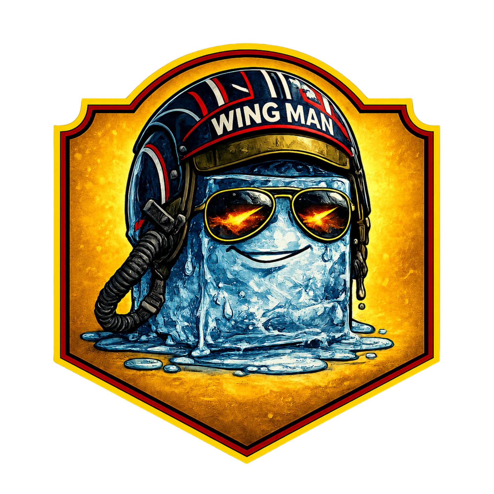
Epic Wingman
"Another five wing runs in the books. Every great sauce needs an Epic Wingman."
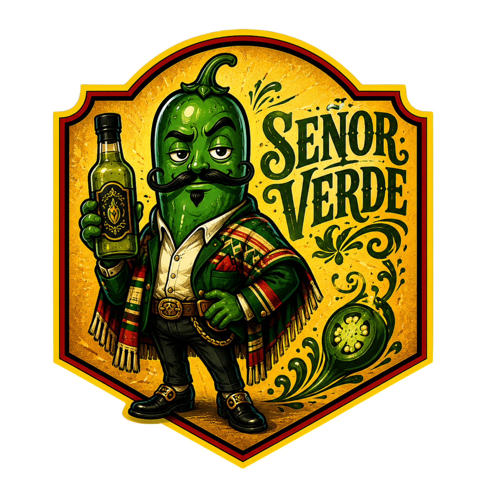
Señor Verde
"Five more green ones across the bar. Señor Verde rides again."
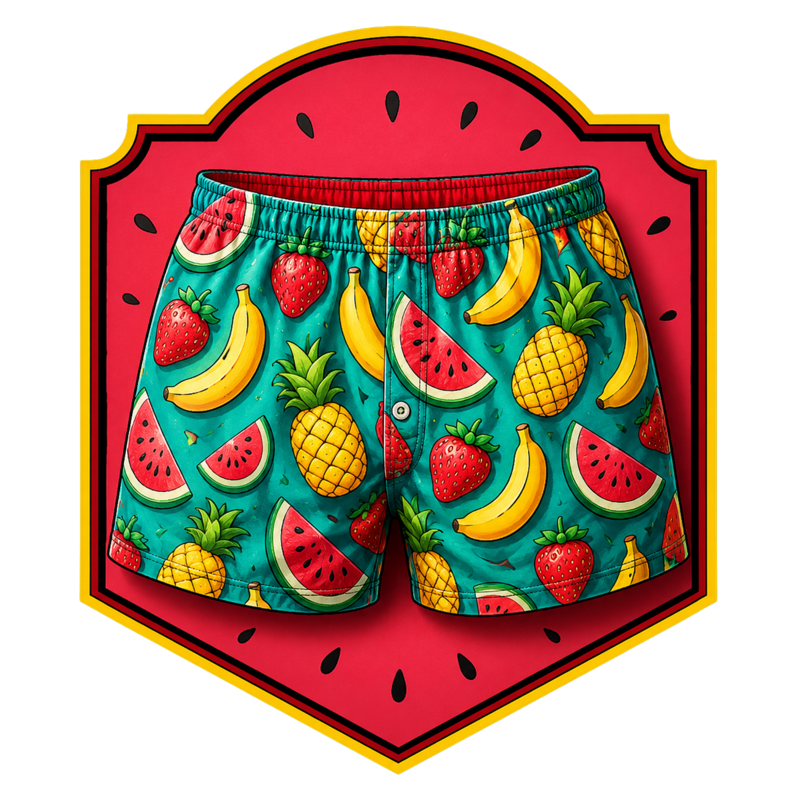
Fruity Pants
"Five more fruit-forward troublemakers. Go ahead—put your Fruity Pants back on."
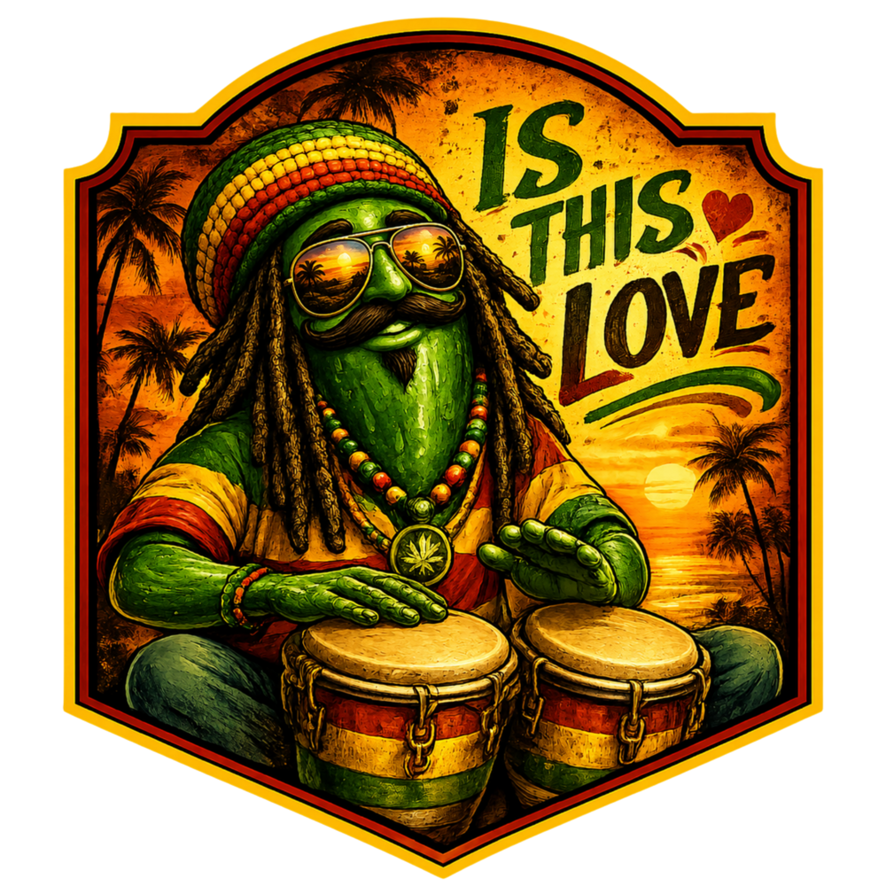
Is This Love
"Five more tastes of the islands. Is this love? At this point, I'd say it's getting serious."
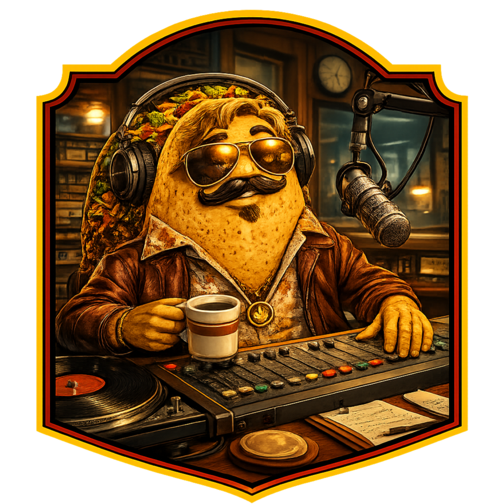
Taco Fever
"Five more bottles for taco night. Bad news—the fever's spreading."
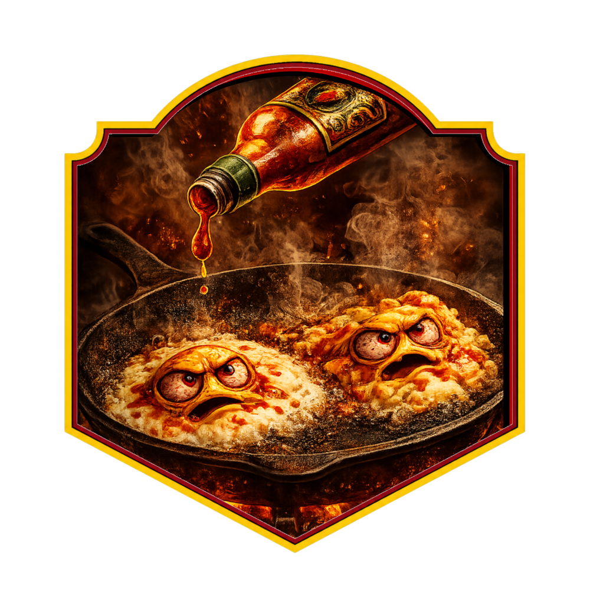
This Is Your Brain on Hot Sauce
"Five more breakfasts with a little burn. This is your brain on hot sauce—and apparently it wants seconds."
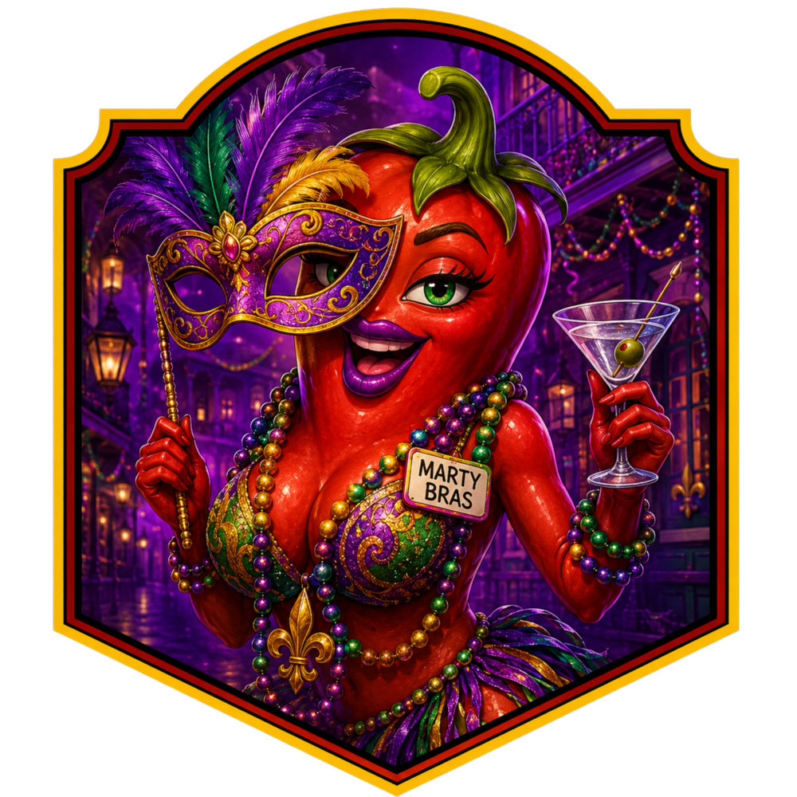
Marty Bras
"Five more Cajun picks and the whole joint's starting to shake. Marty Bras has entered the building."
Garlic Breath
"Five more garlic-heavy choices. Your flavor is fearless. Your breath is now everybody else's problem."
The Veggie Outlaws
"Five more vegetables gone rogue. The Veggie Outlaws just added another notch to the belt."
Muy Rico!
"Five more bold Mexican flavors. That's not just good—that's Muy Rico!"
Flavortown Mayor
"Five more seasonings under your watch. The mayor has officially won another term."
Flavor Junkie
"Five more condiments for the collection. You're not browsing anymore—you need the flavor."
Snack Shack
"Five more snack attacks handled. The Snack Shack is open, and apparently you've got the keys."
Shore Dinner Regular
"Five more tastes from the sea. Pull up a chair—the Shore Dinner Norm is back."
Olive Oil & Vin — Ch. 1
Mediterranean · Narrative Entry
Triggered by NUMBER OF ITEMS in a single visit — NOT dollar amount. Level Up Rule applies: each qualifying visit increments level indefinitely. Catchphrase never changes. 4-item gap: Lincoln Penny levels up, nudge toward Nickel. Path: assets/badges/bottle-purchase-coins/
Lincoln Wheat Penny
"This Makes Sense"
Level 1
Unlocks at 3 items
Tap to flip
In Circulation
1909–1958 · 95% copper, 5% tin and zinc (1943: zinc-coated steel — wartime copper shortage)
Fun Fact
In 1943 copper was diverted for the war effort so pennies were struck on zinc-coated steel for one year. A handful were accidentally struck on leftover copper planchets. Those error pennies are now worth $100,000 or more. Check your change.
Level Up this badge with a 3 item purchase.
Buffalo Nickel
"5 Alive"
Level 1
Unlocks at 5 items
Tap to flip
In Circulation
1913–1938 · 75% copper, 25% nickel
Fun Fact
In 1937 at the Denver Mint, a pressman over-polished a die to remove surface marks and accidentally erased the buffalo's front right leg. Thousands of "three-legged" nickels were released before the error was caught. A circulated example is worth around $612 today. Uncirculated: $2,258–$5,221 or more.
Level Up this badge with a 5 item purchase.
Mercury Dime
"Six-Pack of Legends"
Level 1
Unlocks at 6 items
Tap to flip
In Circulation
1916–1945 · 90% silver, 10% copper
Fun Fact
It's not actually Mercury on the coin. The figure is Lady Liberty wearing a winged cap — a symbol of freedom of thought. The resemblance to the Roman god Mercury was so strong that the nickname stuck and never left.
Level Up this badge with a 6 item purchase.
Standing Liberty Quarter
"Quarter Past Seven"
Level 1
Unlocks at 7 items
Tap to flip
In Circulation
1916–1930 · 90% silver, 10% copper
Fun Fact
The original 1916 design featured Lady Liberty with one breast fully exposed. The public outcry was immediate — religious leaders called it obscene, citizens' groups lobbied Congress, and the design was revised in 1917 to cover her in a coat of chain mail. Only 52,000 of the original bare-breasted quarters were struck, making them extremely rare today.
Level Up this badge with a 7 item purchase.
Walking Liberty Half Dollar
"Eight to Appreciate"
Level 1
Unlocks at 8 items
Tap to flip
In Circulation
1916–1947 · 90% silver, 10% copper
Fun Fact
The Walking Liberty design is considered one of the most beautiful motifs ever employed on a circulating coin. It was so beloved that the obverse design has been used on the American Silver Eagle since its inception in 1986 — still in use today, nearly 80 years after the original coin was retired.
Level Up this badge with an 8 item purchase.
Peace Dollar
"Peace Is With You"
Level 1
Unlocks at 9 items
Tap to flip
In Circulation
1921–1935 · 90% silver, 10% copper
Fun Fact
The Peace Dollar was commissioned in 1921 to commemorate the end of World War I — the first U.S. coin explicitly designed as a symbol of peace. Sculptor Anthony de Francisci used his wife Teresa as the model for Lady Liberty. She had recently immigrated from Italy and later said posing for the coin was the proudest moment of her life.
Level Up this badge with a 9 item purchase.
Triggered by DOLLAR AMOUNT of single transaction — highest threshold reached only. Thresholds passed through are never awarded. Level Up Rule applies. Dynamic nudge math lives in the Junction Progress Station cart — NOT on the badge. Path: assets/badges/check-total/
Pickup Sticks
"Every great collection starts with the first pick."
Level 1
Tap to flip
Pickup Sticks
1930s commercial version. Born in the Depression era when entertainment had to cost nothing. A handful of colored sticks, a steady hand, and the whole family was occupied for an hour. Simple, portable, and requiring no board or special equipment — perfect when pennies counted.
Leveling up to the next badge is $15 away. · Level Up Rule applies.
Chinese Checkers
"You're already three jumps ahead."
Level 1
Tap to flip
Chinese Checkers
Despite the name, invented in Germany in 1892 as Stern-Halma. Rebranded as Chinese Checkers in America in 1928 and became a nationwide craze through the 1930s. The star-shaped board made it instantly recognizable on any shelf — and the name, completely unrelated to its origin, stuck forever.
Leveling up to the next badge is $15 away. · Level Up Rule applies.
Dominoes
"One good sauce leads to another. Watch them fall."
Level 1
Tap to flip
Dominoes
European dominoes date to the 18th century, derived from Chinese tile games. By the 1920s and 1930s they were a fixture of American parlor life — kitchen tables, front porches, barbershops. The game had rules. The real joy was standing them up in a line and letting them fall.
Leveling up to the next badge is $10 away. · Level Up Rule applies.
Bingo
"Spice Things Up Until You Reach BINGO!"
Level 1
Tap to flip
Bingo
Standardized and mass marketed in 1929 by Edwin Lowe after he witnessed a carnival game called Beano. By the early 1930s an estimated 10,000 Bingo games were being played weekly across North America. A Depression-era staple — cheap, social, and available everywhere. The number O-69 is historically documented.
Leveling up to the next badge is $10 away. · Level Up Rule applies.
Checkers
"Purchasing like a King!"
Level 1
Tap to flip
Checkers
Ancient origins, codified into modern rules in the 1800s. By the 1920s and 1930s checkers was the quintessential American parlor game — found in every home, every barbershop, every general store. No era defined checkers more than the Depression years when entertainment had to be free. Getting kinged was the whole point.
Leveling up to the next badge is $10 away. · Level Up Rule applies.
Parcheesi
"No Safe Space Can Contain Your Need for Heat."
Level 1
Tap to flip
Parcheesi
An American adaptation of the ancient Indian game Pachisi, trademarked by Selchow and Righter in 1874. By the 1920s and 1930s it was one of the most widely owned board games in America — a fixture in parlors, sunrooms, and vacation cottages. The safe space was a lie. Someone always sent you back.
Leveling up to the next badge is $10 away. · Level Up Rule applies.
Monopoly
"What's Free About Parking?"
Level 1
Tap to flip
Monopoly
Charles Darrow sold it to Parker Brothers in 1935 during the height of the Depression. The irony of a game about accumulating wealth during America's poorest decade made it an instant phenomenon. Over 20,000 sets sold in its first year. The railroads on the board — B&O, Reading, Pennsylvania, Short Line — were all real. Free Parking was a house rule. It was never in the original instructions.
Leveling up to the next badge is $10 away. · Level Up Rule applies.
Scrabble
"Pssssh.. Now This is a Real Score."
Level 1
Tap to flip
Scrabble
Invented by Alfred Mosher Butts in 1938 as Criss-Cross Words. Largely ignored until 1948 when James Brunot acquired the rights and refined it. Became a national sensation in the early 1950s when Macy's placed a large order. One of the great slow-burn success stories in game history. PEPPER JUNCTION on a triple word score — that's the whole game right there.
Leveling up to the next badge is $10 away. · Level Up Rule applies.
Sorry!
"Sliding into this many new sauces feels as fun as the game."
Level 1
Tap to flip
Sorry!
Based on the ancient Indian game Pachisi, Sorry! was patented in England in 1929 and introduced to North America by Parker Brothers in 1934. The concept of sending opponents back to start with a cheerful apology made it an instant family favorite — equal parts strategy and gleeful sabotage. The slide was the whole reason you played.
You've reached the top tier. Nothing left to prove. · Level Up Rule applies.
Triggered by DOLLAR AMOUNT of single transaction — highest threshold reached only. Never awards passed-through tiers. Level Up Rule applies — same threshold on return visit increments level. Dynamic nudge math lives in Junction Progress Station cart — NOT on the badge. Red ring frame references the illuminated globe on 1930s gravity-feed fuel pumps.
Fill 'Er Up
"Let's fill the cart."
Level 1
Tap to flip
Fill 'Er Up — $10
In 1930 that same $10 filled a Model T tank — twice over — and still had change. Gas ran 17 to 20 cents a gallon. Texaco, Gulf, and Standard Oil competed for every car on every American road. The gravity-feed pump with its illuminated globe was the beacon that said fuel is here. You could see it from a mile down the road.
Level Up this badge with a $10 purchase.
Speakeasy
"You'd have a speakeasy for hot sauce."
Level 1
Tap to flip
Speakeasy — $25
Prohibition ended December 5, 1933. Before that, a bottle cost $4.01 a quart — nearly triple the pre-Prohibition price, thanks to bootlegger markups, police payoffs, and production risk. After repeal, domestic spirits dropped to under a dollar a fifth. The Manhattan cocktail, the Old Fashioned, the whiskey sour — all legal again, all waiting on the bar.
Level Up this badge with a $25 purchase.
Sauce Director
"Look at you Sauce Director."
Level 1
Tap to flip
Sauce Director — $40
In 1930 that same $40 was $2.00 in period money — and $2.00 took a family of four to the movies — tickets, popcorn, and a chocolate bar each on the way out — and still had change. A ticket was 35 cents. Popcorn was a nickel. The movies were the Depression-era escape. Ten cents bought two hours of forgetting. People flocked to Hollywood because it was the cheapest door out of the real world.
Level Up this badge with a $40 purchase.
Broadcast
"Broadcast your cart!"
Level 1
Tap to flip
Broadcast — $50
The living room radio was the internet of the 1930s. FDR's Fireside Chats, Jack Benny, The Lone Ranger, breaking news from Europe — all of it came through that cathedral-shaped wooden cabinet. By 1930, over 12 million American homes had one. The family gathered around it the way families gather around screens today. The difference was everyone was listening to the same thing at the same time.
Level Up this badge with a $50 purchase.
Market Run
"Just another trip to the market."
Level 1
Tap to flip
Market Run — $60
In 1930 that same $60 was $3.00 — and $3.00 covered a family's full weekly grocery run. Campbell's Soup, Kellogg's Corn Flakes, Libby's canned goods, Domino Sugar, Chase & Sanborn Coffee — all Depression-era staples, all recognizable on any shelf today. A loaf of bread was a nickel. A dozen eggs was 18 cents. A quart of milk was 14 cents. Three dollars fed a family for a week.
Level Up this badge with a $60 purchase.
Free Shipping
"Free Parking or Free Shipping!"
Level 1
Tap to flip
Free Shipping — $70
Parker Brothers released Monopoly in 1935 — $2.00 for the complete set. Over 20,000 sold in the first year. The irony of a game about accumulating wealth during America's poorest decade made it an instant phenomenon. Free Parking was never in the original rules. It was a house rule — invented by players, adopted everywhere, and never officially sanctioned. Like most of the best things in life.
Level Up this badge with a $70 purchase.
Distance Rider
"Distance won't keep you apart."
Level 1
Tap to flip
Distance Rider — $80
In 1930 that same $80 hailed a cab in Midtown Manhattan and rode it 170 miles to Newport, Rhode Island. At 30 cents a mile through Depression-era New York, $4.00 in period money took you the whole way. Newport in the 1930s was Gilded Age territory — the Breakers, the Cliff Walk, the social elite of the Eastern Seaboard. That cab ride was an event. Leather seats, jump seats, a driver who played the horses on the radio.
Level Up this badge with an $80 purchase.
Rock Like a Doc
"Rock like a Doc!"
Level 1
Tap to flip
Rock Like a Doc — $90
In 1930 a doctor earned between $4,000 and $5,000 a year — the most respected professional in any community, making roughly $90 a week. That leather bag, that stethoscope, that house call in the middle of the night — all of it for what you just spent on hot sauce. The doctor made house calls in 1930. Nobody Doordashed anything. They came to you.
Level Up this badge with a $90 purchase.
There Goes the House
"There goes the house."
Level 1
Tap to flip
There Goes the House — $100
In 1930 that same $100 covered a monthly mortgage payment on a freestanding estate in Brookline, Massachusetts — Cottage Farm, Corey Hill, Millionaire's Row. Grounds, gardens, and a garage. Frederick Law Olmsted designed the neighborhood to feel like country living with a streetcar to Boston. The bank teller behind that brass cage window handled the paperwork. Next please.
Level Up this badge with a $100 purchase.
Hot Sauce Over a Yacht
"I'd take hot sauce over a yacht."
Level 1
Tap to flip
Hot Sauce Over a Yacht — $125
In the 1930s a small outboard motorboat ran $125 to $300 — an Evinrude Super mounted on a lapstrake wooden hull, ready for the bay. In Rhode Island that boat was a way of life. Narragansett Bay, Point Judith Pond, the salt ponds of South County — weekends on the water, fish on the line, and nothing but open bay ahead. You spent what a boat cost. And you got something better.
You've reached the top tier. Nothing left to prove. · Level Up Rule applies.
Every 3 reviews = next badge. Tiers 1–9 title and art visible. Tiers 10–12 (Reporter, Journalist, Anchorman): title visible below frame, art completely blacked out until earned — the art IS the spoiler. Señor Verde & Marty Bras narrative concludes at tiers 10–12 as Easter egg for most devoted reviewers. Path: assets/badges/reviews/
✅📰
News Boy
3 Reviews · 1930s street scene · Model A Ford · Market sign visible
✅📰
Paper Boy
6 Reviews · Bicycle delivery · Mid-throw · Classic American neighborhood
✅📰
Town Crier
9 Reviews · Boy on crate · Period town square · Hand cupped, finger raised
✅📰
Street Hawker
12 Reviews · Period newsstand · Newspapers, Magazines, Cigars · "Read the Papers"
✅📰
The Pawtuxet Valley Times
15 Reviews · Rural mailbox #2261 · Newspaper tube · Owner's childhood address · Bus stop stone
✅📰
The Entry
18 Reviews · Coventry High School newspaper · Actual photo of the school on front page · Owner's HS
✅📰
The Reminder
21 Reviews · Coventry wins 19th straight state wrestling title · Actual image of owner on cover · Senior year HS
✅📰
The Journal Bulletin
24 Reviews · Actual Providence Journal headline · Adoptee records access legislation · Owner worked on this directly
✅📰
Market Inquirer
27 Reviews · Grocery store checkout counter scene · Period candy · "Stay Informed. Shop Smarter."
✅ 🔒 Easter EggBlacked Out
Reporter
30 Reviews · Art blacked out until earned · Señor Verde narrative conclusion — title visible, art hidden
✅ 🔒 Easter EggBlacked Out
Journalist
33 Reviews · Art blacked out until earned · Señor Verde narrative conclusion — title visible, art hidden
✅ 🔒 Easter EggBlacked Out
Anchorman
36 Reviews · Art blacked out until earned · Señor Verde & Marty Bras story ends here · Only 36-review customers ever see this
Earn Chili Peppers through purchases. Exchange tokens at qualifying pepper thresholds. Balance depletes on exchange. One token per transaction. Multiple tokens available simultaneously across qualifying tiers. Bridge art on front · Reward on reverse.
Bixby Creek Bridge
Big Sur, California
50 🌶️
Tap to flip
Complimentary
Slap Ya Mama Cajun Original
Opened in 1932, the Bixby Creek Bridge spans 714 feet above a dramatic coastal canyon on California's Highway 1. Featured in HBO's Big Little Lies and countless car commercials, it's one of the most photographed bridges in the world.
Seven Mile Bridge
Florida Keys, Florida
50 🌶️
Tap to flip
Complimentary
Slap Ya Mama Cajun Hot
Stretching 6.79 miles between Knight's Key and Little Duck Key, the Seven Mile Bridge is the iconic symbol of the Florida Keys. Built in 1982 alongside the remains of Henry Flagler's original 1912 railroad bridge, it carries travelers toward Key West over open Atlantic and Gulf waters simultaneously.
Sunshine Skyway
Tampa Bay, Florida
75 🌶️
Tap to flip
Complimentary
Ass Kickin' Habanero Garlic Salt
The Bob Graham Sunshine Skyway Bridge rises 430 feet above Tampa Bay on bright yellow cables. Completed in 1987 after a tragic 1980 freighter collision destroyed the original span, it has appeared in three films and a documentary. At 4.1 miles, it's one of the longest cable-stayed bridges in the world.
Coronado Bridge
San Diego, California
75 🌶️
Tap to flip
Complimentary
Slap Ya Mama Hot Sauce
The San Diego–Coronado Bridge sweeps across San Diego Bay in a graceful 80-degree curve — a deliberate design choice to reduce wind stress and avoid a Navy airfield's flight path. Opened in 1969, its 200-foot central span and distinctive arc make it one of the most visually distinctive bridges in America.
Mackinac Bridge
Straits of Mackinac, Michigan
75 🌶️
Tap to flip
Complimentary
Heartbreaking Dawn's The Green
Opened in 1957, "Mighty Mac" connects Michigan's Upper and Lower Peninsulas across the Straits of Mackinac where Lake Huron meets Lake Michigan. At 26,372 feet of total length, it held the title of longest suspension bridge in the Western Hemisphere for decades. Every Labor Day, thousands walk it — the only day pedestrians are permitted.
Chesapeake Bay Bridge
Maryland
100 🌶️
Tap to flip
Complimentary
Dirty Dick's Hot Tropical
Known to locals as the Bay Bridge, the William Preston Lane Jr. Memorial Bridge has carried Eastern Shore travelers across the Chesapeake since 1952. Spanning 4.3 miles with virtually no shoulder and open-grate sections that reveal the water below, it's been called one of the scariest bridges in the world — and one of the most essential on the East Coast.
New River Gorge Bridge
Fayetteville, West Virginia
100 🌶️
Tap to flip
Complimentary
Sucklebusters Original BBQ
Completed in 1977, the New River Gorge Bridge held the title of world's longest steel arch span for 26 years. Rising 876 feet above the New River — one of the oldest rivers on the continent — it's the centerpiece of a National Park, was featured on the West Virginia state quarter, and hosts Bridge Day each October, when BASE jumpers legally leap from its deck.
Tacoma Narrows Bridge
Tacoma, Washington
100 🌶️
Tap to flip
10% Off Entire Purchase
Applied at Checkout
On November 7, 1940 — just four months after opening — the original Tacoma Narrows Bridge twisted itself apart in a 40 mph wind and collapsed into Puget Sound. "Galloping Gertie," as it was called, became the most studied engineering failure in history and permanently changed how suspension bridges are designed worldwide. The current bridge, opened 1950, stands as a tribute to lessons learned.
Zakim Bunker Hill Bridge
Boston, Massachusetts
125 🌶️
Tap to flip
Complimentary
Colon Cleaner Hot Mustard
Opened in 2003 as part of Boston's Big Dig, the Leonard P. Zakim Bunker Hill Memorial Bridge is the widest cable-stayed bridge ever built. Its distinctive twin towers are modeled on the nearby Bunker Hill Monument. Bostonians claimed it immediately — it appears in The Departed, The Equalizer, and has become the defining symbol of modern Boston.
Verrazzano-Narrows Bridge
New York Harbor, New York
150 🌶️
Tap to flip
Complimentary
Sucklebusters Hogwaller 14oz
Opened in 1964, the Verrazzano-Narrows Bridge connects Brooklyn to Staten Island across New York Harbor. Named for the Italian explorer who first sailed into the bay in 1524, it was the world's longest suspension bridge at opening. Every November, over 50,000 runners cross it at the start of the New York City Marathon — the only time pedestrians set foot on it.
SF–Oakland Bay Bridge
San Francisco Bay, California
150 🌶️
Tap to flip
15% Off Entire Purchase
Applied at Checkout
While the Golden Gate gets the postcards, the Bay Bridge does the work. Carrying over 240,000 vehicles daily across two spans and Yerba Buena Island, it opened in 1936 — six months before the Golden Gate. The eastern self-anchored suspension span, completed in 2013, is the largest of its kind ever built and lights up nightly with the Bay Lights installation.
George Washington Bridge
Hudson River, New York / New Jersey
175 🌶️
Tap to flip
Complimentary
2 Pig Mafia Steak Seasoning 14oz
The GWB opened in 1931 as the world's longest suspension bridge. Today it carries 14 lanes of traffic and over 103 million vehicles annually — the busiest bridge on Earth. It flies the world's largest free-flying American flag from its lower chord in honor of 9/11. It has appeared in 8 films and is part of the I-95 corridor connecting Maine to Florida.
Brooklyn Bridge
East River, New York City
200 🌶️
Tap to flip
Complimentary
Ariston Garlic Infused Olive Oil 8.45oz
Opened in 1883, the Brooklyn Bridge was the world's first steel-wire suspension bridge and the longest suspension bridge of its era. Designated a National Historic Landmark, it spans 1,595 feet across the East River with Gothic granite towers that remain among the most recognized silhouettes in the world. To prove its safety after opening, 21 elephants were walked across it.
Lake Pontchartrain Causeway
Louisiana
200 🌶️
Tap to flip
Complimentary
Ariston Fig Infused Balsamic Vinegar 8.45oz
The Lake Pontchartrain Causeway is the longest bridge over water in the United States — 23.83 miles of twin spans connecting Metairie to Mandeville, Louisiana. For eight miles in the middle, no land is visible in any direction. Opened in 1956 and expanded in 1969, it carries commuters across the lake daily and remains a feat of scale that still stops people mid-crossing.
Golden Gate Bridge
San Francisco, California
225 🌶️
Tap to flip
20% Off Entire Purchase
Applied at Checkout
The most recognized bridge in the world. Opened in 1937 in International Orange — chosen to be visible through the dense Pacific fog — the Golden Gate held the title of world's longest suspension bridge for 27 years. Heavier than the Empire State Building, it's held together by 1.2 million steel rivets. Over 10 million people visit it annually.
⚠ Narrative badge art is in development. Chapter 1 of Olive Oil & Vin uses badge-food-mediterranean.png
Señor Verde & Marty Bras
Trigger: Equal purchases from Verde + Cajun categories (Jalapeño-based sauces count toward Verde). Every 2 from each = new chapter. 9 Chapters.
Ch. 1
They meet at Mardi Gras
Ch. 2
At the bar partying together
Ch. 3
Hotel room — passed out, beads everywhere
Ch. 4
Señor Verde — the walk of shame
Ch. 5
Verde tells the boys (sweating)
Ch. 6
Marty tells her girls
Ch. 7
They see each other again
Ch. 8
Back at the party together
Ch. 9
Hotel room again. Beads everywhere. Some things never change.
Olive Oil & Vin
Trigger: Mediterranean Food Style purchases. Every 5 = new chapter. 4 Chapters. Ch.1 = badge-food-mediterranean.png
Ch. 1
"Looks Great." / "Thank you. But how does the salad look?" — The Accidental Meeting. ✅ Art complete.
Ch. 2
Lunch — giant antipasto. "Do these people only eat salads?" / "Well... I'm a vegetarian."
Ch. 3
Table cleared, hours later. He leans in: "Why don't we get together over a pizza?"
Ch. 4
Happily ever after — together in an elegant oil & vinegar cruet.
The Shooting Pepper Gang (SPG)
Trigger: Pepper Junction All Purpose SPG 14oz purchases ONLY. Every 5 = new chapter. 5 Chapters.
Ch. 1
Wanted Poster — Salt, Pepper, Garlic. "Wanted for: Making Everything Taste Better."
Ch. 2
Garlic in the saloon. Asparagus swagger in. "Expect to get dusted, Veggies."
Ch. 3
The gang rides together
Ch. 4
High noon showdown at the grill
Ch. 5
Riding off into the sunset
⚠ Art needed for all 9 event badges. Format: food symbol + year (e.g. 🍕 2026). Badge name = event name.
⬜ Art Needed🌶️
National Hot Sauce Day
January 22
⬜ Art Needed🍕
National Pizza Day
February 9
⬜ Art Needed🍕
National Cheese Pizza Day
September 5
⬜ Art Needed🍕
National Pepperoni Pizza Day
September 20
⬜ Art Needed🍔
National Cheeseburger Day
September 18
⬜ Art Needed🥑
National Guacamole Day
September 16
⬜ Art Needed🌶️
National Hot & Spicy Day
August 18
⬜ Art Needed🌮
National Taco Day
First Tuesday October
⬜ Art Needed🍗
National Chicken Wing Day
July 29
Awarded on first completed order shipped to that state. Level Up on every subsequent shipment to the same state — no cap. Lvl = total shipments to that state (1:1). Same gold token format across all 50. Reverse face: same token art + year of statehood + landmark historical narrative + current level. Sectioned by region. Left-aligned grid — incomplete rows left as-is. Regional completion secret badges: ON HOLD.
New England
Connecticut
Mystic Seaport — Charles W. Morgan
Lvl 1
Tap to flip
Connecticut · Statehood 1788
The Charles W. Morgan, launched in 1841 at New Bedford and now berthed at Mystic Seaport, is the last surviving wooden whaleship in the world. She made 37 voyages over 80 years of active service. No vessel better represents the age of American sail.
Lvl 1
Maine
Portland Head Light
Lvl 1
Tap to flip
Maine · Statehood 1820
Commissioned by George Washington in 1787 and completed in 1791, Portland Head Light is the oldest lighthouse in Maine and one of the most photographed in America. It stands 80 feet above the Atlantic at the entrance to Portland Harbor, guarding one of New England's most important ports for over 230 years.
Lvl 1
Massachusetts
Faneuil Hall
Lvl 1
Tap to flip
Massachusetts · Statehood 1788
Built in 1742 by merchant Peter Faneuil and donated to the city of Boston, Faneuil Hall has been called the Cradle of Liberty. Samuel Adams, James Otis, and the Sons of Liberty used its great hall to organize resistance to British taxation before the Revolution. It has been in continuous public use for over 280 years.
Lvl 1
New Hampshire
Mount Washington Cog Railway
Lvl 1
Tap to flip
New Hampshire · Statehood 1788
Opened in 1869, the Mount Washington Cog Railway was the world's first mountain-climbing cog railway. It climbs 6,288 feet to the summit of the highest peak in the Northeast — where a wind speed of 231 mph was recorded on April 12, 1934, holding the world record for 76 years. The train still runs on steam.
Lvl 1
Rhode Island
Claiborne Pell Newport Bridge
Lvl 1
Tap to flip
Rhode Island · Statehood 1790
Spanning 1.6 miles across Narragansett Bay between Jamestown and Newport, the Claiborne Pell Bridge opened in 1969 and remains the longest suspension bridge in New England. It connects Aquidneck Island — home to Newport's Gilded Age mansions and America's Cup sailing heritage — to the Rhode Island mainland. The defining landmark of the Ocean State's skyline.
Lvl 1
Vermont
Stowe Ski Resort
Lvl 1
Tap to flip
Vermont · Statehood 1791
Stowe Mountain Resort sits beneath Mount Mansfield — Vermont's highest peak at 4,395 feet. Skiing began here in the 1930s, making it one of the oldest ski destinations in the Eastern United States. The von Trapp family of Sound of Music fame settled in Stowe after fleeing Austria in 1938 and still operates a lodge on the hillside above the village.
Lvl 1
Mid-Atlantic
Delaware
Fort Delaware
Lvl 1
Tap to flip
Delaware · Statehood 1787
Fort Delaware sits on Pea Patch Island in the Delaware River and was built between 1848 and 1859 to defend Philadelphia and Wilmington. During the Civil War it held up to 12,500 Confederate prisoners — more than any other Union prison. The island itself formed naturally from a raft of pea sacks that ran aground and collected silt over decades.
Lvl 1
Maryland
Fort McHenry
Lvl 1
Tap to flip
Maryland · Statehood 1788
On September 13–14, 1814, Fort McHenry withstood 25 hours of British naval bombardment during the Battle of Baltimore. When Francis Scott Key saw the American flag still flying at dawn, he wrote the poem that became The Star-Spangled Banner. The flag that flew that night — 30 by 42 feet — is preserved at the Smithsonian.
Lvl 1
New Jersey
Cape May Lighthouse
Lvl 1
Tap to flip
New Jersey · Statehood 1787
Built in 1859 and standing 157 feet tall, the Cape May Lighthouse is the third lighthouse built at the southern tip of New Jersey. It guards the entrance to Delaware Bay and has guided ships through one of the busiest shipping lanes on the East Coast for over 165 years. Over 100,000 visitors climb its 199 steps annually.
Lvl 1
New York
Statue of Liberty
Lvl 1
Tap to flip
New York · Statehood 1788
A gift from France dedicated on October 28, 1886, the Statue of Liberty stands 305 feet above New York Harbor. For millions of immigrants arriving by ship through Ellis Island between 1892 and 1954, Lady Liberty was the first image of America they ever saw. She has appeared in more films and works of art than any other American landmark.
Lvl 1
Pennsylvania
Liberty Bell / Independence Hall
Lvl 1
Tap to flip
Pennsylvania · Statehood 1787
The Liberty Bell was cast in 1752 and rang to summon citizens to hear the first public reading of the Declaration of Independence on July 8, 1776. Independence Hall behind it is where both the Declaration of Independence and the U.S. Constitution were signed — arguably the most historically significant block of ground in the Western Hemisphere.
Lvl 1
Virginia
Colonial Williamsburg
Lvl 1
Tap to flip
Virginia · Statehood 1788
Colonial Williamsburg served as the capital of the Virginia Colony from 1699 to 1780 — the most populous British colony in America. Its 301-acre Historic Area preserves 88 original 18th-century buildings. Patrick Henry delivered his first major political speech here in 1765. The restoration began in 1926 funded by John D. Rockefeller Jr.
Lvl 1
West Virginia
New River Gorge Bridge
Lvl 1
Tap to flip
West Virginia · Statehood 1863
Completed in 1977, the New River Gorge Bridge rises 876 feet above one of the oldest rivers on the continent and held the title of world's longest steel arch span for 26 years. Featured on the West Virginia state quarter. Every October, Bridge Day brings 100,000 visitors and hundreds of BASE jumpers who legally leap from its deck — the only day of the year it's permitted.
Lvl 1
Southeast
Alabama
Vulcan Park & Museum, Birmingham
Lvl 1
Tap to flip
Alabama · Statehood 1819
Cast in 1904 for the St. Louis World's Fair, the Vulcan statue stands 56 feet tall atop a 124-foot sandstone pedestal on Red Mountain overlooking Birmingham — the tallest cast iron statue in the world. Vulcan, Roman god of the forge, was chosen to represent Birmingham's iron and steel industry. He has stood watch over the city for over 120 years.
Lvl 1
Florida
Kennedy Space Center
Lvl 1
Tap to flip
Florida · Statehood 1845
Kennedy Space Center at Cape Canaveral has been the launch site for every American human spaceflight since 1968. Apollo 11 launched from here on July 16, 1969 — carrying the first humans to walk on the Moon. The Space Shuttle program launched 135 missions from this complex between 1981 and 2011. No ground on Earth has sent more people into space.
Lvl 1
Georgia
Savannah Historic District
Lvl 1
Tap to flip
Georgia · Statehood 1788
Established in 1733 by James Oglethorpe, Savannah is America's first planned city — its original grid of 22 public squares still intact nearly 300 years later. Spanish moss hangs from live oaks over cobblestone streets lined with Federal and Regency architecture. Forrest Gump's bench was here. There is no city in America quite like it.
Lvl 1
Kentucky
Churchill Downs, Louisville
Lvl 1
Tap to flip
Kentucky · Statehood 1792
Churchill Downs opened in 1875 and has hosted the Kentucky Derby every May since — the oldest continuously held major sporting event in the United States. The twin spires above the grandstand, completed in 1895, are the most recognized symbol in American horse racing. The Run for the Roses draws 150,000 spectators and is watched by millions worldwide.
Lvl 1
Mississippi
Vicksburg National Military Park
Lvl 1
Tap to flip
Mississippi · Statehood 1817
The 47-day siege of Vicksburg ended on July 4, 1863 — the same day as Gettysburg. Union control of the Mississippi River split the Confederacy in two and decided the western campaign of the Civil War. The park preserves 1,325 monuments and markers — the largest collection of Civil War monuments anywhere in the country.
Lvl 1
North Carolina
Cape Hatteras Lighthouse
Lvl 1
Tap to flip
North Carolina · Statehood 1789
At 198 feet, Cape Hatteras Lighthouse is the tallest brick lighthouse in the United States. Built in 1870 to warn ships away from Diamond Shoals — the Graveyard of the Atlantic — its distinctive black-and-white spiral stripe is visible 20 miles out to sea. In 1999 it was moved 2,900 feet inland to save it from erosion — the largest lighthouse relocation in history.
Lvl 1
South Carolina
Fort Sumter, Charleston Harbor
Lvl 1
Tap to flip
South Carolina · Statehood 1788
At 4:30 AM on April 12, 1861, Confederate artillery opened fire on Fort Sumter — the first shots of the Civil War. The Union garrison surrendered after 34 hours. No one was killed in the bombardment. The war that followed would kill over 620,000 Americans. Fort Sumter is now a national monument accessible only by ferry from Charleston.
Lvl 1
Tennessee
Grand Ole Opry, Nashville
Lvl 1
Tap to flip
Tennessee · Statehood 1796
Established November 28, 1925 as a radio barn dance on WSM Nashville, the Grand Ole Opry is the longest-running live radio broadcast in American history — still airing every weekend. It launched the careers of Hank Williams, Patsy Cline, Dolly Parton, and Johnny Cash. Country music as an American genre was built on its stage.
Lvl 1
Midwest
Iowa
Field of Dreams
Lvl 1
Tap to flip
Iowa · Statehood 1846
Built for the 1989 Kevin Costner film on a working farm in Dyersville, the Field of Dreams baseball diamond has become one of the most visited sports sites in America. The line — "If you build it, he will come" — entered the American cultural vocabulary permanently. The field still hosts games every summer. People drive hours through cornfields just to stand on it.
Lvl 1
Illinois
Willis Tower, Chicago
Lvl 1
Tap to flip
Illinois · Statehood 1818
Completed in 1973 and standing 1,451 feet tall, the Willis Tower held the title of world's tallest building for 25 years. Chicago invented the skyscraper, and the Willis Tower was the city's ultimate proof of concept. The Skydeck's glass-floored Ledge on the 103rd floor extends 4 feet out from the building over 1,353 feet of open air.
Lvl 1
Indiana
Indianapolis Motor Speedway
Lvl 1
Tap to flip
Indiana · Statehood 1816
Built in 1909 and covering 253 acres, Indianapolis Motor Speedway is the largest spectator sports venue in the world with permanent seating for over 250,000. The Indianapolis 500 has been run every Memorial Day weekend since 1911 — the longest-running major motorsport event on Earth. The yard of bricks at the start-finish line is all that remains of the original 1909 surface.
Lvl 1
Kansas
Tallgrass Prairie
Lvl 1
Tap to flip
Kansas · Statehood 1861
Less than 4% of the original 170 million acres of tallgrass prairie that once covered North America still exists. The Tallgrass Prairie National Preserve in the Kansas Flint Hills protects the largest remaining tract. Before European settlement, an estimated 30 million bison roamed this landscape — a rolling sea of big bluestem grass stretching beyond the horizon in every direction.
Lvl 1
Michigan
Mackinac Bridge
Lvl 1
Tap to flip
Michigan · Statehood 1837
Opened November 1, 1957, the Mackinac Bridge connects Michigan's Upper and Lower Peninsulas across the Straits of Mackinac — where Lake Huron meets Lake Michigan. At 26,372 feet of total length it is one of the longest suspension bridges in the Western Hemisphere. Every Labor Day it closes to traffic so thousands of people can walk it — the only day pedestrians are permitted.
Lvl 1
Minnesota
Stone Arch Bridge, Minneapolis
Lvl 1
Tap to flip
Minnesota · Statehood 1858
Built in 1883 by James J. Hill for his Great Northern Railway, the Stone Arch Bridge spans 2,100 feet across the Mississippi River at Saint Anthony Falls — the only natural waterfall on the entire Mississippi. It was the only curved stone arch railroad bridge in North America. Converted to a pedestrian and bike path in 1994, it anchors Minneapolis's historic riverfront.
Lvl 1
Missouri
Gateway Arch, St. Louis
Lvl 1
Tap to flip
Missouri · Statehood 1821
Completed in 1965 and standing 630 feet — the tallest man-made monument in the United States — the Gateway Arch sits on the west bank of the Mississippi in St. Louis, marking the starting point of America's westward expansion. Architect Eero Saarinen's stainless steel catenary curve contains no straight lines anywhere in its structure.
Lvl 1
Nebraska
Chimney Rock
Lvl 1
Tap to flip
Nebraska · Statehood 1867
A 325-foot spire of ancient volcanic ash rising from the Nebraska plains, Chimney Rock was the most noted landmark on the entire Oregon Trail. Pioneer journals mention it more than any other landmark on the 2,000-mile route — it told travelers they were a quarter of the way to Oregon. Visible for miles in every direction, it was the first thing that felt like the West.
Lvl 1
North Dakota
Painted Canyon Overlook
Lvl 1
Tap to flip
North Dakota · Statehood 1889
The Painted Canyon Overlook in Theodore Roosevelt National Park offers the first dramatic view of the North Dakota badlands — eroded buttes and coulees carved over millions of years by the Little Missouri River. Roosevelt came here in 1883 to hunt bison, lost his wife and mother on the same day in 1884, and stayed. The land shaped the conservationist who would protect 230 million acres of American wilderness.
Lvl 1
Ohio
Rock & Roll Hall of Fame, Cleveland
Lvl 1
Tap to flip
Ohio · Statehood 1803
Designed by I.M. Pei and opened in 1995 on the shores of Lake Erie, the Rock and Roll Hall of Fame is housed in a striking glass pyramid complex. Cleveland was chosen because DJ Alan Freed coined the phrase "rock and roll" here and hosted the first rock concert in history — the Moondog Coronation Ball — in Cleveland in 1952.
Lvl 1
South Dakota
Mount Rushmore
Lvl 1
Tap to flip
South Dakota · Statehood 1889
Carved between 1927 and 1941 by sculptor Gutzon Borglum and his son Lincoln, Mount Rushmore features 60-foot granite faces of Washington, Jefferson, Roosevelt, and Lincoln in the Black Hills. The project used 800 million pounds of dynamite and took 14 years. Originally planned to show the presidents from head to waist, funding ran out. Nearly 3 million people visit annually.
Lvl 1
Wisconsin
Devil's Lake State Park
Lvl 1
Tap to flip
Wisconsin · Statehood 1848
Wisconsin's most visited state park, Devil's Lake sits in a 500-foot deep glacial valley in the Baraboo Range — among the oldest hills on Earth, formed over 1.6 billion years ago. The lake has no inlet or outlet — fed entirely by springs and precipitation. Quartzite bluffs rise dramatically on its north and south shores, drawing climbers, hikers, and swimmers from across the Midwest every season.
Lvl 1
Southwest
Arizona
Horseshoe Bend
Lvl 1
Tap to flip
Arizona · Statehood 1912
Horseshoe Bend is a horseshoe-shaped meander of the Colorado River near Page, Arizona. The river drops 1,000 feet below the canyon rim in a nearly perfect 270-degree arc carved through Navajo sandstone over millions of years. It has become one of the most photographed natural landmarks in America — drawing over 2 million visitors annually to stand at the edge of a cliff with no guardrail.
Lvl 1
New Mexico
Fajada Butte
Lvl 1
Tap to flip
New Mexico · Statehood 1912
Fajada Butte rises 443 feet from the floor of Chaco Canyon — the center of ancestral Puebloan civilization from 850 to 1150 CE. Near its summit, three stone slabs create a solar calendar — the Sun Dagger — that marks summer solstice, winter solstice, and the equinoxes with perfect precision using only light and shadow. It remains one of the most remarkable astronomical achievements of any ancient culture.
Lvl 1
Oklahoma
First Americans Museum
Lvl 1
Tap to flip
Oklahoma · Statehood 1907
Opened in 2021 in Oklahoma City, the First Americans Museum tells the story of the 39 sovereign tribal nations that call Oklahoma home — many forcibly relocated here during the Trail of Tears in the 1830s. The building's design is rooted in Native cosmology: a 400-foot mound, a 200-foot promontory aligned to the solstice, and a Great Meadow following traditional circular Indigenous architectural forms.
Lvl 1
Texas
The Alamo, San Antonio
Lvl 1
Tap to flip
Texas · Statehood 1845
From February 23 to March 6, 1836, a garrison of 189 Texan defenders held the Alamo against approximately 1,800 Mexican soldiers for 13 days before the fort fell and all defenders were killed — including Jim Bowie and Davy Crockett. "Remember the Alamo" became the rallying cry that won Texas its independence six weeks later at the Battle of San Jacinto.
Lvl 1
Mountain West
Colorado
Rocky Mountain National Park
Lvl 1
Tap to flip
Colorado · Statehood 1876
Established in 1915, Rocky Mountain National Park encompasses 415 square miles of alpine terrain including 77 peaks over 12,000 feet. Trail Ridge Road — the highest continuous paved highway in the United States — crosses the Continental Divide at 12,183 feet and traverses 11 miles above treeline. On a clear day from the summit, you can see the curvature of the Earth.
Lvl 1
Idaho
Shoshone Falls
Lvl 1
Tap to flip
Idaho · Statehood 1890
Known as the Niagara of the West, Shoshone Falls on the Snake River drops 212 feet — 36 feet higher than Niagara Falls — and stretches 900 feet wide at peak spring flow. Unlike Niagara, virtually no water is diverted for power generation during peak season. The falls were a sacred gathering place for the Shoshone people for thousands of years before European contact.
Lvl 1
Montana
Glacier National Park
Lvl 1
Tap to flip
Montana · Statehood 1889
Called the Crown of the Continent, Glacier National Park once held over 150 glaciers. Today 26 remain — and scientists project those will be gone before 2050. The Going-to-the-Sun Road, completed in 1932 after 11 years of construction, crosses the Continental Divide at Logan Pass through terrain so steep that workers were lowered on ropes to drill the cliff face.
Lvl 1
Nevada
The Las Vegas Strip
Lvl 1
Tap to flip
Nevada · Statehood 1864
The Las Vegas Strip stretches 4.2 miles along Las Vegas Boulevard South and contains the highest concentration of luxury hotel rooms on Earth. The Flamingo, opened by Bugsy Siegel in 1946, started it all. Today the Strip generates over $7 billion in gaming revenue annually and is visible from space on satellite imagery — one of the brightest man-made light sources on the planet.
Lvl 1
Utah
Delicate Arch, Arches National Park
Lvl 1
Tap to flip
Utah · Statehood 1896
Standing 60 feet tall and spanning 46 feet, Delicate Arch is the most recognized natural arch in the world and the symbol on Utah's license plate. It formed over an estimated 100 million years as water seeped into cracks in Entrada Sandstone, froze, expanded, and slowly dissolved the rock around it. At sunset the arch glows deep red against the La Sal Mountains.
Lvl 1
Wyoming
Old Faithful Geyser
Lvl 1
Tap to flip
Wyoming · Statehood 1890
Old Faithful has erupted approximately every 91 minutes since Yellowstone became the world's first national park in 1872. Each eruption sends 3,700 to 8,400 gallons of boiling water up to 185 feet into the air. Yellowstone sits atop one of the largest active supervolcanoes on Earth — the magma chamber beneath it is roughly the size of the city of Los Angeles.
Lvl 1
Pacific Coast
California
Golden Gate Bridge
Lvl 1
Tap to flip
California · Statehood 1850
Opened May 28, 1937 in International Orange — chosen to remain visible through Pacific fog — the Golden Gate Bridge spans 4,200 feet across the entrance to San Francisco Bay. It held the title of world's longest suspension bridge for 27 years. Over 10 million people visit annually. It is the most recognized bridge on Earth.
Lvl 1
Oregon
Crater Lake
Lvl 1
Tap to flip
Oregon · Statehood 1859
Crater Lake formed approximately 7,700 years ago when the volcano Mount Mazama collapsed following a catastrophic eruption 42 times larger than Mount St. Helens. At 1,943 feet it is the deepest lake in the United States. Its water — fed only by rain and snow, never by rivers — is among the clearest on Earth, producing a blue so vivid it appears unnatural in photographs.
Lvl 1
Washington
Mount Rainier
Lvl 1
Tap to flip
Washington · Statehood 1889
Mount Rainier is a massive stratovolcano standing 14,411 feet above sea level — the most glaciated peak in the contiguous United States, with 26 named glaciers covering 35 square miles. Visible from Seattle on clear days, it dominates the entire Pacific Northwest skyline. Geologists consider it one of the most dangerous volcanoes in the world due to the volume of ice it carries.
Lvl 1
Outer Reach
Alaska
Denali
Lvl 1
Tap to flip
Alaska · Statehood 1959
At 20,310 feet, Denali is the tallest peak in North America and the third highest on Earth by topographic prominence. Known as Denali — The High One — by the Athabascan people for thousands of years, it was officially renamed from Mount McKinley in 2015. Only about half of climbers who attempt the summit reach it. On the clearest days it is visible from Anchorage — 130 miles away.
Lvl 1
Hawaii
Akaka Falls
Lvl 1
Tap to flip
Hawaii · Statehood 1959
Akaka Falls plunges 442 feet in a single unbroken drop through lush rainforest on the Big Island's Hamakua Coast — one of the tallest waterfalls in the United States. Surrounded by wild ginger, bamboo, and ti plants, the falls are sacred in Native Hawaiian tradition. The name Akaka is believed to derive from a Hawaiian word meaning to shine or gleam — describing how the waterfall catches light through the rainforest canopy.
Lvl 1
Trigger: Lifetime cumulative count of Hot Sauce + Buffalo Sauce items purchased, across all orders. Thresholds: 10 / 25 / 50 / 100 / 250 / 500 / 1000. If a single purchase or the first purchase crosses multiple thresholds at once, every threshold crossed is awarded simultaneously — no partial cascade. 1000 (Sauce Dementia) is the current top tier. Single-face card — no flip behavior. Hover enlarges image; click toggles enlarged card view; click again returns to original size.
Sauce Fiend · 10
"Ten sauces deep and already ignoring the speed limit. I like your style."
Sauce Fanatic · 25
"Mile marker 25. At this point, you're not sightseeing—you're committed."
Sauce Addict · 50
"Fifty sauces down. The exits are behind you now."
Sauce Cra-Cra · 100
"One hundred sauces. You didn't just take the scenic route—you paved it."
Sauce Freak · 250
"Two-fifty on the odometer. Even I'm starting to worry about you."
Sauce Psycho · 500
"Five hundred sauces. The wheels are smoking, but somehow you're still asking what's next."
Sauce Dementia · 1000
"One thousand sauces. You may not remember how this started—but the bartender sure does."
Trigger: 1 qualifying purchase within the defined local-time window = Level Up for that window's badge. No cap on levels. Badge awarded strictly at transaction completion time — never at start of shopping session. Customer local time determined via browser-reported IANA timezone (e.g. America/New_York), converted against the Square-confirmed completion timestamp. Time windows are intentional gaps — periods outside the 5 defined windows award nothing, by design, permanently. Time frames are never shown in customer-facing badge copy. Single-face card — no flip behavior. Hover enlarges image; click toggles enlarged card view; click again returns to original size. Secret badge "Clocked Out" awarded for earning all 5 time-window badges — filed under Secret Badges, never shown before earned.
Early Bird
"Easy there, sunshine. The coffee hasn't even finished waking up yet."
Lunch Hour
"Clocked out for lunch and clocked straight into Pepper Junction, we like that."
Evening Commute
"You made it out of the rat race. Now run like somebody scheduled another meeting."
Late Night
"Late-night shopping from the trash-can district. Respect."
Night Owl
"You're either a night owl or tomorrow's biggest problem."
🔒 Secret
🐻
YES, CHEF!
1 Purchase from Every Category · The Bear · FX
🔒 Secret
🐴
Year of the Horse
Complete All 12 Celestial Badges · 2026 · Retiring
🔒 Secret
🕐
Clocked Out
"Congratulations. The cuckoo has officially had enough of you."
Earn All 5 Shop O'Round the Clock Badges